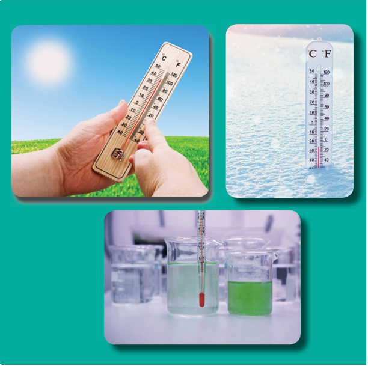
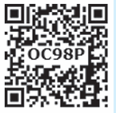
You shiver when it is cold outside and sweat when it is hot outside, but how can you measure those weather temperatures? Temperature is involved in many aspects of our daily lives, including our own bodies and health; the weather; and how hot the stove must be in order to cook food.
The measurement of warmness or coldness of a substance is known as its temperature. It is a measure of the average kinetic energy of the particles in an object. Temperature is related to how fast the atoms within a substance are moving.
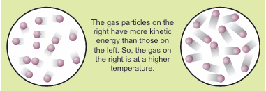
Description for the above picture begins, The gas particles on the right have more kinetic energy than those on the left. So, the gas on the right is at a higher temperature.
There are three units which are used to measure the temperature: Degree Celsius, Fahrenheit and Kelvin.
Degree Celsius, Celsius is written as degree C and read as degree. For example 20°C, it is read as twenty degree Celsius. Celsius is called as Centigrade as well.
Fahrenheit, Fahrenheit is written as DEGREE F for example 25°F, it is read as twenty five degree Fahrenheit.
Kelvin, Kelvin is written as K. For example 100K, it is read as hundred Kelvin. The S I unit of temperature is kelvin (K).
The temperature of the object is well approximated with the kinetic energy of the substances. The high temperature means that the molecules within the object are moving at a faster rate. But the question arises, how to measure it? Molecules in any substance are very small to analyze and calculate its movement (Kinetic energy) in order to measure its temperature. You must use an indirect method to measure the kinetic energy of the molecules of a substance. We studied that solids expands when heat is supplied to it. Like solid substances, liquids are also affected by heat. To know this let us do the activity 1.
In a thermometer, when liquid gets heat, it expands and when it is cooled down, it contracts. It is used to measure temperature. Like solid and liquid objects, the effect of heat is also observed on gaseous objects.
Thermometer is the most common instrument to measure temperature.
There are various kinds of thermometers. Some of them are like glass tubes which look thin and are filled with some kind of liquid.
Why Mercury or Alcohol is used in Thermometer?
Mostly Alcohol and Mercury are used in thermometers as they remain in liquid form even with a change of temperature in them. A small change in the temperature causes change in volume of a liquid. We measure this temperature by measuring expansion of a liquid in thermometer.
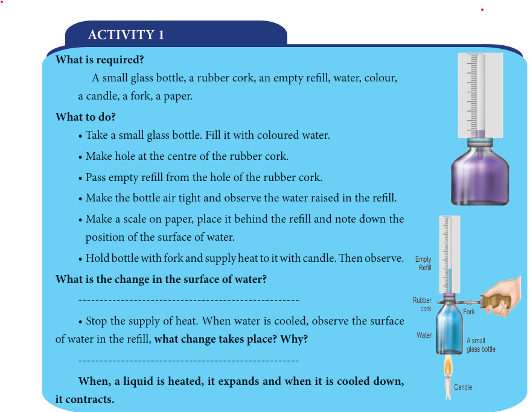
Description for the above image begins,
What is required?
A small glass bottle, a rubber cork, an empty refill, water, colour, a candle, a fork, a paper.
What to do?
• Take a small glass bottle. Fill it with coloured water.
• Make hole at the centre of the rubber cork.
• Pass empty refill from the hole of the rubber cork.
• Make the bottle air tight and observe the water raised in the refill.
• Make a scale on paper, place it behind the refill and note down the position of the surface of water. • Hold bottle with fork and supply heat to it with candle. Then observe.
What is the change in the surface of water? dash
• Stop the supply of heat. When water is cooled, observe the surface of water in the refill, what change takes place? Why? dash
When, a liquid is heated, it expands and when it is cooled down, it contracts.
Description for the above image ends.
There are different types of thermometers for measuring the temperatures of different things like air, our bodies, food and many other things. Among these, the commonly used thermometers are clinical thermometers and laboratory thermometers.
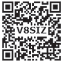
These thermometers are used to measure the temperature of a human body, at home, clinics and hospitals. All clinical thermometers have a kink that prevents the mercury from f lowing back into the bulb when the thermometer is taken out of the patient’s mouth, so that the temperature can be noted conveniently. There are temperature scales on either side of the mercury thread, one in Celsius scale and the other in Fahrenheit scale. Since the Fahrenheit scale is more sensitive than the Celsius scale, body temperature is measured in F only. A clinical thermometer indicates temperatures from a minimum of 35°C or 94°F to a maximum of 42°C or 108°F.
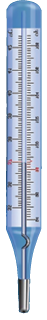
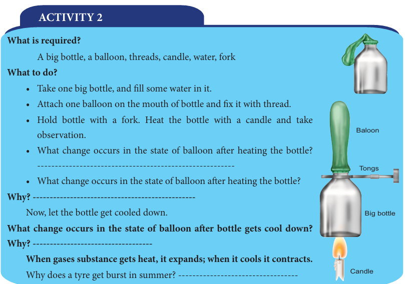
Description for the above image begins,
What is required?
A big bottle, a balloon, threads, candle, water, fork
What to do?
• Take one big bottle, and fill some water in it.
• Attach one balloon on the mouth of bottle and fix it with thread.
• Hold bottle with a fork. Heat the bottle with a candle and take observation.
• What change occurs in the state of balloon after heating the bottle? dash
• What change occurs in the state of balloon after heating the bottle?
Why? Dash
Now, let the bottle get cooled down.
What change occurs in the state of balloon after bottle gets cool down?
Why? Dash
When gases substance gets heat, it expands; when it cools it contracts.
Why does a tyre get burst in summer? dash
Description for the above image ends.
Precautions to be Followed While Using a Clinical Thermometer
Laboratory thermometers are used to measure the temperature in school and other laboratories for scientific research. They are also used in the industry as they can measure temperatures higher than what clinical thermometers can record. The stem and the bulb of a lab thermometer are longer when compared to that of a clinical thermometer and there is no kink in the lab thermometer. A laboratory thermometer has only the Celsius scale ranging from minus 10°C to 110°C.
Precautions to be Followed While Using a Laboratory Thermometer
• Do not tilt the thermometer while measuring the temperature. Place it upright.
• Note the reading only when the bulb has been surrounded by the substance from all sides.
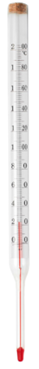
Measure your body temperature
Wash the thermometer preferably with an antiseptic solution. Hold it firmly by the end and give it a few jerks. These jerks will bring the level of Mercury down. Ensure that it falls below 35°C or (95°F). Now place the thermometer under your tongue or arm pit. After one minute, take the thermometer out and note the reading. It tells you your body temperature.
What did you record as your body temperature? Dash. activity 3 ends.
Use of Laboratory thermometer
• Take some water in a beaker.
• Take a laboratory thermometer and immerse its bulb end in water; holding it vertically. Ensure to dip whole portion of bulb end. The bulb end should not touch the bottom or side of the beaker.
• Observe the movement of rise of mercury. When it becomes stable, take the reading of the thermometer.
• Repeat this with hot water and take the reading.
Activity 4 ends.
Difference between clinical and laboratory thermometer, table begins
Clinical Thermometer |
Laboratory Thermometer |
Clinical thermometer is scaled from 35°C to 42°C or from 94°F to 108°F |
Laboratory thermometer is generally scaled from minus 10°C to 110°C. |
In Clinical thermometer Mercury level does not fall on its own, as there is a kink near the bulb to prevent the fall of mercury level |
In Laboratory thermometer Mercury level falls on its own as no kink is present. |
Clinical thermometer Temperature can be read after removing the thermometer from armpit or mouth. |
Laboratory thermometer Temperature is read while keeping the thermometer in the source of temperature, example, a liquid or any other thing. |
Clinical thermometer, To lower the mercury level jerks are given. |
Laboratory thermometer No need to give jerk to lower the mercury level. |
Clinical thermometer is used for taking the body temperature |
Laboratory thermometer is used to take temperature in laboratory. |
Here is a lot of concern over the use of mercury in thermometers. Mercury is a toxic substance and is very difficult to dispose of if a thermometer breaks. These days, digital thermometers are available which do not use mercury. Instead, it has a sensor which can measure the heat coming out from the body directly and from that can measure the temperature of the body. Digital thermometers are mainly used to take the body temperature.
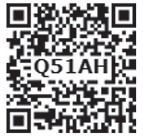
Use of Digital thermometer
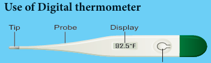
1. Wash the tip with warm (not hot), soapy water.
2. Press the "ON" button.
3. Insert the tip of the thermometer into the mouth, bottom, or under the armpit.
4. Hold the thermometer in place until it beeps (about 30 seconds).
5. Read the display.
6. Turn off the thermometer, rinse under water, and put it away in a safe place.
ACTIVITY 5 ends.
Caution
Alex wanted to measure the temperature of hot milk using a clinical thermometer. His teacher stopped him from doing so.
We are advised not to use a clinical thermometer for measuring the temperature of any object other than human body. Also we are advised to avoid keeping it in the sun or near a flame. Why?
A Clinical thermometer has small temperature range. The glass will crack or burst due to excessive pressure created by expansion of mercury.
Maximum-minimum thermometer
The maximum and minimum temperatures of the previous day reported in weather reports are measured by a thermometer called the maximum - minimum thermometer. Do you know ends.
Celsius scale
Celsius is the common unit of measuring temperature, termed after Swedish astronomer, Anders Celsius in 1742, before that it was known as Centigrade as thermometers using this scale are calibrated from (Freezing point of water) 0°C to 100°C (boiling point of water). In Greek, ‘Centium’ means 100 and ‘Gradus’ means steps, both words make it centigrade and later Celsius.
Fahrenheit Scale
Fahrenheit is a Common unit to measure human body temperature. It is termed after the name of a German Physicist Daniel Gabriel Fahrenheit. Freezing point of water is taken as 32°F and boiling point 212°F. Thermometers with Fahrenheit scale are calibrated from 32°F to 212°F.
Kelvin scale
Kelvin scale is termed after Lord Kelvin. It is the SI unit of measuring temperature and written as K also known as absolute scale as it starts from absolute zero temperature.
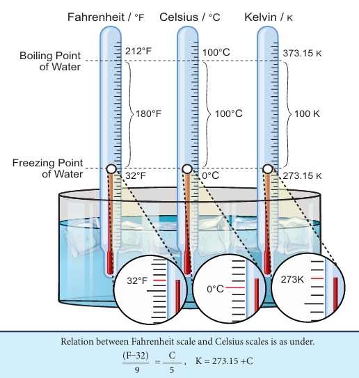
Description for the above image begins
In Fahrenheit scale the freezing point of water is 32 degree Fahrenheit, Boiling point of water is 212 degree Fahrenheit , and the Difference is 180 degree Fahrenheit.
In Celsius scale the freezing point of water is 0 degree Celsius, Boiling point of water is 100 degree Celsius, and the Difference is 100 degree Celsius.
In Kelvin scale the freezing point of water is 273 point 15 Kelvin, Boiling point of water is 373 point 15 kelvin, and the Difference is 100 kelvin.
Relation between Fahrenheit scale and Celsius scales is as under.
F minus 32 divided by 9 is equal to C by 5,
K is equal to 273.15 plus C.
Description for the above image ends.
The equivalence between principal temperature scales are given in Table for some temperatures
Temperature |
Celsius scale (°C) |
Farenheit scale (°F) |
Kelvin scale (K) |
Temperature ,Boiling point of water |
Celsius scale , 100 |
Farenheit scale , 212 |
Kelvin scale, 373.15 |
Temperature ,Freezing point of water |
Celsius scale , 0 |
Farenheit scale, 32 |
Kelvin scale, 273.15 |
Temperature ,Mean temperature of human body |
Celsius scale , 37 |
Farenheit scale, 98.6 |
Kelvin scale, 310.15 |
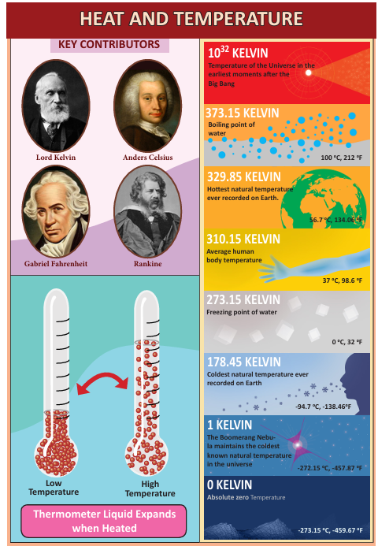
Description for the above image begins,
Key contributors of heat and temperature are Lord Kelvin, Anders Celsius, Gabriel Fahrenheit and Rankine.
Thermometer liquid expands when heated.
Temperature of the Universe in the earliest moments after the Big Bang is 10 to the power 32 KELVIN.
Boiling point of water is 373.15 KELVIN. 100 degree C, 212 degree F.
Hottest natural temperature ever recorded on Earth is 329.85 KELVIN, 56.7 degree C, 134.06 degree F.
Freezing point of water is 273.15 KELVIN, 0 degree C, 32 degree F.
Coldest natural temperature ever recorded on Earth is 178.45 KELVIN, minus 94.7 degree C, minus 138.46 degree F.
The Boomerang Nebula maintains the coldest known natural temperature in the universe is 1 KELVIN, minus 272.15 degree C, minus 457.87 degree F.
Absolute zero Temperature is 0 KELVIN, minus 273.15 degree C, minus 459.67 degree F.
Description for the above image ends.
Most of the people in the world use the Celsius scale to measure temperature for day to day purpose. The Kelvin scale has been designed in such a way, it is not only an absolute temperature scale, but also 1°C change is equal to a 1K change. This makes the conversion from Celsius to absolute temperature scale (Kelvin scale) easy, just the addition or subtraction of a constant 273.15.
But in United States they prefer to use the Fahrenheit scale. The problem is, converting Fahrenheit to absolute scale (Kelvin) is not easy.
To sort out this problem they use T he Rankine scale. It named after the Glasgow University engineer and physicist Rankine, who proposed it in 1859. It is an absolute temperature scale, and has the property of having a 1° R change is equal to a 1° F change. Fahrenheit users who need to work with absolute temperature can be converted to Rankine by R = F+ 459.67, do you know ends.
Solved examples
1. How much will the temperature of 68°F be in Celsius and Kelvin?
Given,
Temperature in Fahrenheit = F = 68°F
Temperature in Celsius = C = question mark
Temperature in Kelvin = question mark
F minus 32 divided by 9 = C by 5
68 minus 32 divided by 9 = C by 5
C = 5 into 36 by 9 = 20 degree C
K = C + 273.15 = 20 + 273.15 = 293.15
Thus, the temperature in Celsius = 20 degree C and in Kelvin = 293.15 K.
2. At what temperature will its value be same in Celsius and in Fahrenheit?
Given,
If the temperature in Celsius is C, then the temperature in Fahrenheit (F) will be same,
That is, F = C. F minus 32 by 9 = C by 5, or
C minus 32 by 9 = C by 5
C minus 32 into 5 = C into 9
5 C minus 160 = 9 C
4 C = minus 160
C = F = minus 40.
The temperatures in Celsius and in Fahrenheit will be same at minus 40.
3. Convert the given temperature
1) 45°C = dash degree Fahrenheit
2) 20°C = dash degree Fahrenheit
3) 68°F = dash degree celsius
4) 185°F = dash degree celsius
5) 0°C = dash K
6) minus 20°C = dash K
7) 100 K = dash degree celsius
8) 272.15 K = dash degree celsius
POINTS TO REMEMBER
1. The measurement of warmness or coldness of a substance is known as its temperature.
2. There are three units which are used to measure the temperature: Degree Celsius, Fahrenheit and Kelvin.
3. The SI unit of temperature is Kelvin (K).
4. In a thermometer, when liquid gets heat, it expands and when it is cooled down, it contracts. It is used to measure temperature.
5. Relation between Fahrenheit scale and Celsius scales is
F minus 32 divided by 9 = C by 5
K = 273.15 + C.
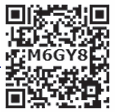
1. International unit of measuring temperature is dash.
a. Kelvin
b. Fahrenheit
c. Celsius
d. Joule
2. In thermometer when bulb comes in contact with hot object, liquid inside it dash.
a. expands
b. contracts
c. remains same
d. none of above
3. The body temperature of a healthy man is
a. 0°C
b. 37°C
c. 98°C
d. 100°C
4. Mercury is often used in laboratory thermometers because it dash.
a. is a harmless liquid
b. is silvery in colour and is attractive in appearance
c. Expands uniformly
d. is a low cost liquid
5. Which of the following temperature conversions is incorrect K ( Kelvin) = °C ( Celsius) plus 273.15.
a. minus 273.15 °C and 0 K
b. minus 123 °C and + 150.15 K
c. + 127 °C and + 400.15 K
d. + 450 °C and + 733.15 K
1. Doctor uses dash thermometer to measure the human body temperature.
2. At room temperature Mercury is in dash state.
3. Heat energy transfer from dash to dash
4) minus 7°C temperature is dash than 0°C temperature.
5. The common laboratory thermometer is a dash thermometer
1 |
Clinical thermometer |
A form of energy |
2 |
Normal temperature of human body |
100°C |
3 |
Heat |
37°C |
4 |
Boiling point of water |
0°C |
5 |
Melting point of water |
Kink |
1. Temperature of Srinagar (J&K) is minus 4°C and in Kodaikaanal is 3°C, which of them has greater temperature ? What is the difference between the temperatures of these two places?
2. Jyothi was prepared to measure the temperature of hot water with a clinical thermometer. Is it right or wrong? Why?
3. A clinical thermometer is not used to measure the temperature of air, why?
4. What is the use of kink in clinical thermometer?
5. Why do we jerk a clinical thermometer before we measure the body temperature?
1. Why do we use Mercury in thermometers? Can water be used instead of mercury? What are the problems in using it?
2. Swathi kept a laboratory thermometer in hot water for some time and took it out to read the temperature. Ramani said it was a wrong way of measuring temperature. Do you agree with Ramani? Explain your answer.
3. The body temperature of Srinath is 99°F. Is he suffering from fever? If so, why?
1. Draw the diagram of a clinical thermometer and label its parts.
2. State the similarities and differences between the laboratory thermometer and the clinical thermometer.
1. What must be the temperature in Fahrenheit, so that it will be twice its value in Celsius?
2. Go to a veterinary doctor (a doctor who treats animals). Discuss and find out the normal temperature of domestic animals and birds.